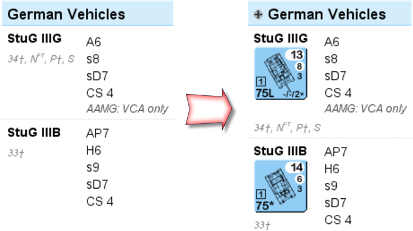
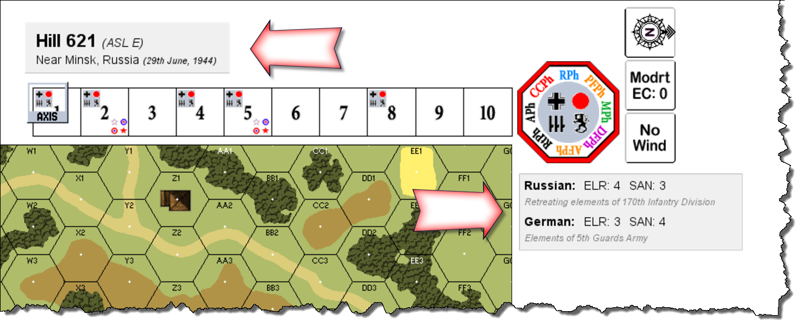
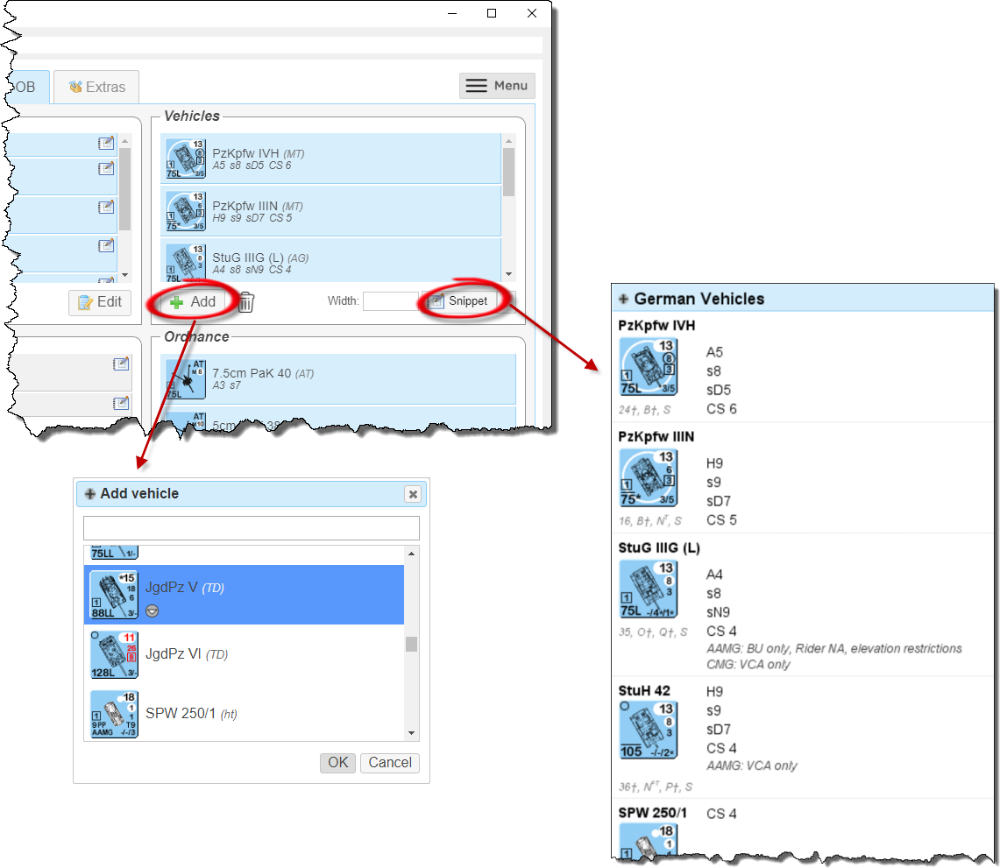
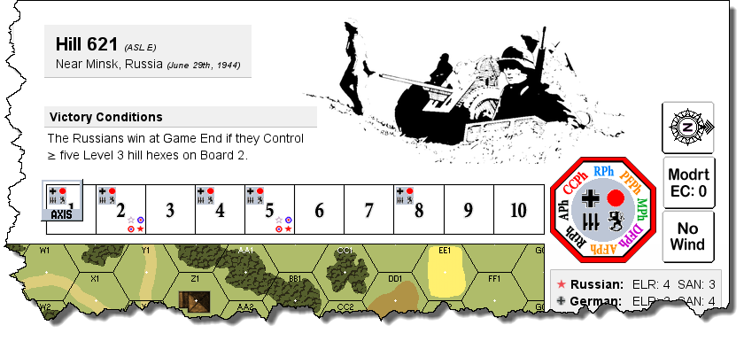
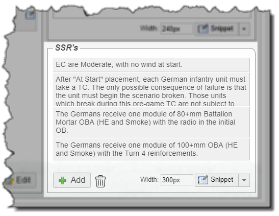
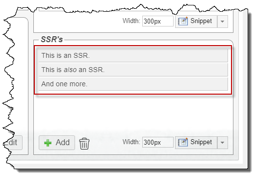
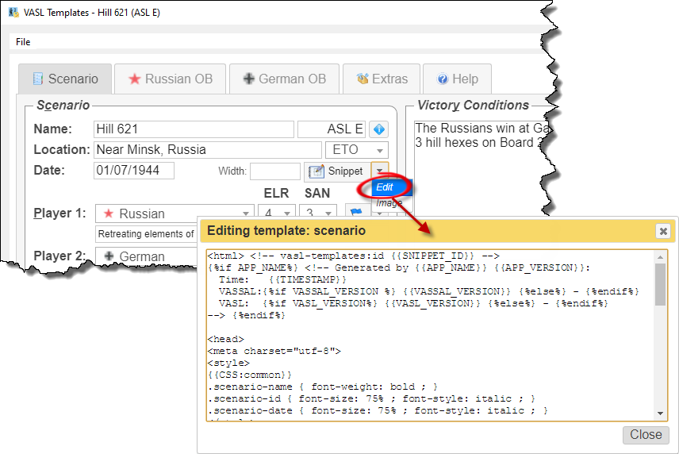

VASL Templates is a web application that runs in a browser, but since it hasn't been set up as a web site on the public internet, you will need to run the web server yourself.
As a convenience, a program is provided that bundles the web server together with an embedded browser, so that it runs as if it were a normal desktop application.
Installing on Windows
If you're using Windows, you should get the pre-built version from Github, unpack it somewhere, then run vasl-templates.exe. Note that it can be a bit slow to start, so please give it a few seconds.
If the program won't start because a DLL is missing from your computer, install the VC2015 runtime (get the 32-bit version, vc_redist.x86.exe, even if you are running 64-bit Windows).
If you don't see anything in the main window, check the notes below about configuring OpenGL.
Running from source
If you're on a Mac or Linux, you can run the program directly from the source code. Get a copy from Github in the usual way, by git clone'ing it, or downloading a ZIP and unpacking it somewhere.
The web server was written and tested using Python 3.6, but it doesn't do anything particularly funky, so any recent version of Python should work.
While not essential, it is strongly recommended that you set up a virtual environment first. Then, install the requirements:
Running the desktop application
If you're on Windows, the Qt runtime will have been installed as part of PyQt5 (when you did the pip install above), but if you're in a virtual environment and you're getting "DLL load failed" errors, this is due to a problem with the way Python sets up the virtualenv. In the virtualenv's scripts/ sub-directory, there should be two Python DLL's, so if you're missing python3.dll, copy it over from the Python installation the virtualenv was created from, and you should be good to go.
If you're on Linux, you will need to install Qt 5.10.0. While your distro may have it as a package, I didn't have much luck on Fedora 27, and had to install it manually using their installer.
Then, just run the vasl-templates command.
Running just the web server
The simpler option is to just run the web server:
Running a Docker container
If you have Docker installed, the webapp can be run in a container e.g.
Then open a browser and connect to the webapp at http://localhost:5010.
Note that some features (e.g. updating and analyzing VASL scenario files) may not be available.
Installing a webdriver
Some features require a webdriver to be installed. You can use either:
- geckodriver (requires Firefox to be installed)
- chromedriver (requires Chrome to be installed)
Unpack the download ZIP file somewhere (it will contain a single executable file), and configure the location in the Server Settings dialog (or set WEBDRIVER_PATH in site.cfg, if you are running from source).
I'm having problems running the desktop application
The desktop application uses OpenGL for the embedded browser, so if you are getting error messages about OpenGL, or the main window is not displaying properly, you can try configuring OpenGL to work in a different way.
Create a file called debug.cfg in $/config/ (the same directory that contains a file called app.cfg) that looks like this:
If you're on Windows, this page might also help.
In the worst case, you can set up your debug.cfg file like this:
Configuring the program
The first thing we want to do is configure the program.
Choose Settings from the File menu and configure the highlighted settings. As a guide, here are some example settings:
| VASSAL installation: | |
| VASL module: | |
| VASL extensions: | |
| VASL boards: | |
| Java: | |
| Web driver: | |
- geckodriver (you must have Firefox installed)
Make sure to download the correct version (32- or 64-bit) for your browser (check the About box).
- chromedriver (you must have Chrome installed)
Make sure to download the version that corresponds to the version of Chrome you are running.
Setting up a scenario
We'll set up The Streets Of Stalingrad, and the scenario card tells us that this is played on Board 1, so fire up VASL, add this board, then save the scenario somewhere (e.g. streets-of-stalingrad.vsav).
In VASL Templates, open the save file for this scenario (The Streets Of Stalingrad (Scenario C).json; you'll find it in the examples/ directory).
Browse through the tabs, and you'll see all the scenario details e.g. Victory Conditions, SSR's, setup instructions.
Click on the info icon in the top-right corner of the Scenario panel to get more detailed information about the scenario.
We now want to create labels in the VASL scenario for all this information. Choose Update VASL scenario from the menu, and select the VASL scenario file you created earlier (e.g. streets-of-stalingrad.vsav). The program will now launch VASSAL to do the work, so be patient since it may take a minute or two, and you may see VASSAL momentarily appear on-screen.
Once it's done, save the updated .vsav file somewhere. Go back to VASSAL, open the updated .vsav file, and you will see all the labels with the scenario information:

In particular, note the data tables for the vehicles, which contain useful information that will need during your game.
Including pictures in the labels
We can pretty-up the labels by including pictures in them. Open the User Settings dialog and turn on the Images in scenarios settings.
Update the VASL scenario again (as above), open it again in VASSAL, and you will see that the labels now include nationality flags, and the vehicle data tables show the counter images:

- From this program: the VASL Templates program must be running before you open the scenario in VASSAL. If you are playing with someone online, they must have the program running as well.
- From the internet: you must have a working internet connection when you open the scenario in VASSAL. There will be a short delay when opening the scenario, as VASSAL downloads the images.
 VASL Templates makes it easy to set up attractive VASL scenarios, with loads of useful information embedded to assist with game play.
VASL Templates makes it easy to set up attractive VASL scenarios, with loads of useful information embedded to assist with game play.
We'll show how by walking through a setup of everyone's favorite scenario, Hill 621. Click on the screenshot to the right to see the finished scenario.
Adding the scenario details
We start by entering the basic scenario details, such as its name, location and date. The easiest way to do this is by searching the ASL Scenario Archive.
Click on the search button, enter the name of the scenario, and once you've found the correct one, click on Import to transfer the details into VASL Templates.
If the Downloads button is enabled, this means that somebody has contributed the entire scenario setup and/or VASL save file, and these are available for download.
 Once the scenario details are in, click on one of the Snippet buttons, and the program will generate an HTML snippet and put it into your clipboard, which you can then copy into a VASL label.
Once the scenario details are in, click on one of the Snippet buttons, and the program will generate an HTML snippet and put it into your clipboard, which you can then copy into a VASL label.
To create a label in VASL, open the Draggable Overlays window, and drag a label onto the main window.
Labels come in two parts, which are accessible via the right-click menu, or press Ctrl-L and Ctrl-2 to access each one. I always just use the first line, so I delete everything in line 2.
The thick black box indicates that the label is selected. If you click elsewhere on the main window, it goes away, and the label will remain in place even if you click on it, or try to drag it. To select it again, Shift-click somewhere in the box, and you will be able to move it around, or edit it. This can sometimes be difficult to find, since it's not visible on-screen, but it will be in the middle (vertically and horizontally) of the label.
 Once you have a label in VASL, copy the HTML snippet generated above into it.
Repeat the process to add the ELR and SAN for both players, and you will now have two labels that you can position in the VASL scenario.
Automatically adding labels to the VASL scenario
Once you've got the hang of adding labels to your VASL scenario, you can get VASL Templates to do it automatically for you. After entering all the scenario details, choose Update VASL scenario from the menu, select the .vsav file you want to update, and all the labels will be inserted into the scenario (or updated, if they're already there).
Adding victory conditions and SSR's
 Adding the scenario's victory conditions is straight-forward. We're generating HTML snippets, so we can type in things like ≥ to get ≥ in the VASL label.
Adding the scenario's victory conditions is straight-forward. We're generating HTML snippets, so we can type in things like ≥ to get ≥ in the VASL label.
Note that we explicitly set a width for the snippet (240px), which caused the text to wrap onto a new line. You could also do this by manually inserting <br> tags where you want line-breaks.
To add SSR's, click on the green plus button in the SSR section and add the SSR text.
Click on the OK button when you're done, or press Ctrl-Enter.
If you want to go back and change the text of an SSR, just double-click on it.
 Once they're all in, click on the Snippet button to get a nicely formatted bullet list.
Once they're all in, click on the Snippet button to get a nicely formatted bullet list.
Adding each player's OB
 Adding each vehicle and ordnance for each player is just a matter of selecting them from a list, and the generated HTML snippet will produce a table of information for each one (see right). Very handy if you have a menagerie of armor and you're, say, looking for something that can fire Smoke.
The scenario date is taken into account when generating these tables e.g. APCR for the Pz IVH is A52, but since the program knows the scenario is set in 1944, it just shows A5. Had the scenario been set in 1941, it wouldn't be shown at all.
Double-click on an entry to make changes to it e.g. because an SSR changes its capabilities, or you'd like to add a note.
 We can also add ad-hoc notes describing where and how units should setup.
We can also add ad-hoc notes describing where and how units should setup.
Click on the icon in each note to generate its snippet, or Shift-click on it.
Finally, if special support weapons such as PF and BAZ are in play, snippets are available with information for them. As with vehicles/ordnance, they are date-aware and update themselves accordingly.
Analyzing a VASL scenario
If you have already set up the VASL scenario, you can choose Analyze VASL scenario from the menu, and the program will scan the .vsav file for vehicles and ordnance, and automatically create entries for each one. Only counters from the two configured nationalities will be imported, so make sure you set these first.
Extra templates

Extra templates are also available to generate other kinds of snippets e.g. to keep track of how many PF shots you have left, or to generate a shaded box that can be inserted behind the Turn Track to indicate an LV Hindrance.
Including your own images
 You can also include your own images in scenarios e.g. the picture from the scenario card, or CG reinforcement tables.
In the Server Settings dialog, configure the directory where you keep your files, then in a template, use {{USER_FILES}} at the start of an image URL e.g.
Suggested workflow
- Set up the VASL scenario, with the boards and counters.
- In VASL Templates, search the ASL Scenario Archive, and use it to get your scenario configuration started.
- Enter the other scenario details e.g. Victory Conditions, SSR's and setup instructions.
- Analyze the VASL scenario, to automatically create entries for vehicles and ordnance.
- Update the VASL scenario, to automatically create labels for all the scenario details and vehicles/ordnance.
 When the scenario has been completed and checked, you can contribute it back to the community by uploading it to the ASL Scenario Archive, where it will be made available to everyone for download.
When the scenario has been completed and checked, you can contribute it back to the community by uploading it to the ASL Scenario Archive, where it will be made available to everyone for download.
Just add your VASL scenario file (.vsav), a screenshot will be automatically generated (or you can add your own), then click Upload.
from the upload e.g. the Victory Conditions and SSR's.
Analyzing log files
As an added bonus, VASL Templates can also analyze VASL log files, to generate a report on how the game went. Choose Analyze log files from the menu, and add one or more VASL log files.
You will be shown a report showing distribution graphs for the dice, and how the dice went over time. You can filter by the type of dice roll (e.g. only Morale Checks or To Kill rolls), as well as change the window size for moving averages. You can even download the data as a CSV, for further analysis!
Click on the flaming dice to see how many 2's and 12's each player rolled, as well as Sniper Activations.
And if there is more than one log file, you can also drill down into each individual session:
The report also calculates "hotness", which is a measure of how hot your dice were. The more low rolls you make, the higher your hotness score, while rolling high makes it go down.
So if you lose, you now have some hard numbers to back you up when you blame the dice 
Configuring the program
VASL user name
Configure your VASL user name here, to have it always shown first when analyzing VASL log files.
HTML snippet font
This setting lets you change the font, and its size, used in VASL labels.
Auto-create National Capabilities labels
Turn this on to automatically create labels that list the national capabilities for both sides when updating a VASL scenario.
Hide unavailable multi-applicable notes
Turn this on to completely omit vehicle/ordnance multi-applicable notes that haven't been set up (instead of showing them as "unavailable").
Confirm settings before updating scenarios
Turn this on to show the User Settings dialog before updating a VASL scenario. This is useful if you are often creating VASL setups with different settings, and gives you a chance to make sure they are correct.
Images in scenarios
Images cannot be stored in a VASL scenario file, so they must stored elsewhere, which means that VASL needs to be told where to get them from:
- From this program: the VASL Templates program must be running before you open the scenario in VASSAL. If you are playing with someone online, they must have the program running as well.
- From the internet: you must have a working internet connection when you open the scenario in VASSAL. There will be a short delay when opening the scenario, as VASSAL downloads the images.
Show Chapter H vehicle/ordnance notes as images
If you have set up the Chapter H vehicle/ordnance notes as HTML, it may not be possible to get the layout you want, since VASSAL's HTML engine is very old and doesn't support many HTML/CSS features. To work around this, this option tells VASL Templates to render the HTML itself (using a modern browser) and send it as an image to VASSAL, which is slower but gives better results.
It is possible to include Chapter H notes in your VASL scenarios, but since this is copyrighted material, the data files are not included in releases, and you will need to set them up yourself.
Setting up the Chapter H data files
Unpack this ZIP file somewhere, and configure the location in the Server Settings dialog (or the CHAPTER_H_NOTES_DIR setting in site.cfg, if you are running from source).
The ZIP file contains placeholder files for the Chapter H vehicle/ordnance notes and multi-applicable notes, so all you have to do is update these files with the real content.
Multi-applicable notes are stored as HTML, so for example, for German Multi-Applicable Vehicle Note A, change the file german/vehicles/a.html as follows:
The vehicle and ordnance notes themselves are stored as image files, so you need to scan your Chapter H pages, and crop each individual note. For example, an image for the German PSW 234/1 can be seen to the left. Right-click on it, download it, and save it on top of german/vehicles/74.png (because it's note #74).
Note that the HTML engine used by VASSAL is ancient and doesn't support floating images, which is needed to format this content in the same way as the ASLRB. To work around this, an option is provided (in the User Settings) to show these vehicle/ordnance notes as images. If this is enabled, the vehicle/ordnance notes will be rendered by the VASL Templates program (using a modern browser), and sent to VASSAL as an image, which is slower but gives the expected layout. If you don't use images in your HTML, you can leave this option disabled, and the raw HTML will be inserted into the VASL scenario, where it will be displayed much more quickly by VASSAL.
Adding Chapter H notes to your VASL scenario
 Restart the VASL Templates program, and add a PSW 234/1 to the German OB. You will see some changes in the UI (see screenshot).
Restart the VASL Templates program, and add a PSW 234/1 to the German OB. You will see some changes in the UI (see screenshot).
In the bottom-right, there are new controls for generating an HTML snippet for the multi-applicable notes. Click on the Snippet button, create a label in a VASL scenario, and you see the multi-applicable notes for the vehicles in the OB (the program will only include those that are needed). This content was taken from the a.html file you set up earlier.
Each individual vehicle and ordnance can also now have its own snippet button. Click on the one for the PSW 234/1, transfer the snippet to your VASL scenario, and you will see the image for Note 74 you set up earlier.
Creating a scenario reference sheet
If you Shift-click on the Snippet buttons, an image of the snippet will be copied to the clipboard, instead of the raw HTML snippet. You can then copy these into Microsoft Word (or any other editor that can accept images), and print it out, to get a reference sheet with all the Chapter H notes for a scenario. Very handy, even if you're not using VASL!
How template files work
The HTML snippets are generated from template files, which are simply text files that contain the HTML you want to insert into the VASL labels, but with placeholders for the scenario name, victory conditions, each player's OB, etc. The user enters these details into the program, and when they want to generate a snippet, all the placeholders are replaced in the template with the real values, thus producing an HTML snippet specific to that scenario.
The template files can be found in $/data/default-template-pack/ (where $ is where you've installed the program).
Placeholders and template conditionals
 We'll take a look at the ssr.j2 file, which is used to generate snippets for the SSR's.
Open the file in a text editor (if you're on Windows, you will probably need to right-click on the file and choose Open with...), and you'll see something like this:
The template looks like normal HTML, but with some extra stuff. Things that look like {% ... %} are commands to the template processor. At the top of the file, we see this:
So, if the user has specified a width of, say 300px, this is what will be inserted into the final HTML snippet:
Looping over lists
There will often be multiple SSR's, and near the bottom of the file, we can see how these are handled:
 If the user had entered the SSR's as shown in the screenshot, then we would get the following inserted into the generated HTML snippet:
Template packs
If you want to customize how the HTML snippets are generated, you could just edit the files directly, but the down-side of doing this is that if you install a new version of the program, you will lose your changes.
 A better way is to create your own set of template files, ZIP them up and load it as a template pack.
A better way is to create your own set of template files, ZIP them up and load it as a template pack.
If you're running the desktop application, you can specify the template pack to start with, so that you don't have to manually upload it each time i.e.
 When you're writing a new template file, it would be painful to have to ZIP up and upload a new template pack every time you made a change, so you can edit templates directly within the program (see screenshot).
Changes you make are live i.e. they will take effect immediately, but note that there is no way to save your changes, so once you're happy with how the template is working, you need to copy it out and save it somewhere.
Setting up
After cloning the repo, install the developer requirements:
The tests use pytest and Selenium WebDriver, so you will need geckodriver and/or chromedriver somewhere in your PATH. The driver to use can be specified via the --webdriver parameter, and you can also run the tests headless e.g
Note that since pylint is run as part of these tests, this should be done from the root directory of the repo.
Compiling the VASSAL shim
The program uses VASSAL to update VASL scenarios (.vsav files), and since this is written in Java, a helper program has been written in Java to do this.
To compile the program, go to the $/vassal-shim directory and type:
Since this program doesn't change very often, the resulting artifact (vassal-shim.jar) is checked into source control, so that it can be used without needing to install a JDK and compiling it first.
Code lint'ing
Python code is checked using pylint (installed during the pip install above), which should be run from the root directory of the repo.
Javascript is checked using jshint, run using Rhino, both of which need to be installed manually. Then, set the JSHINT_RHINO environment variable to point to the script that will run jshint using Rhino e.g.
Creating a pre-compiled package
It is possible to compile the desktop application down to a single binary. This is typically done for the benefit of Windows users, but also works for other platforms. From the root directory of the repo: